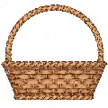
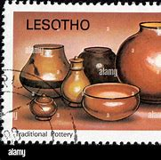
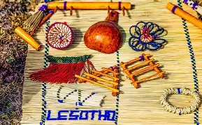

| Pictures | Discription |
|---|---|
|  | Basotho woven baskets are traditional handcrafted items made primarily from local grasses, showcasing the skill of Basotho women and serving both practical and decorative purposes. |
|  | The Basotho people were always known for their innovative and creative range of indigenous crafts. Traditionally the women produced various forms of clay pottery, while the men cleverly plaited grass baskets and hats. |
|  | Basotho beadwork, although less globally known than that of neighbouring cultures like the Zulu or Ndebele, carries profound spiritual and social significance. Beads are often used in ceremonial garments, jewellery, and belts. |